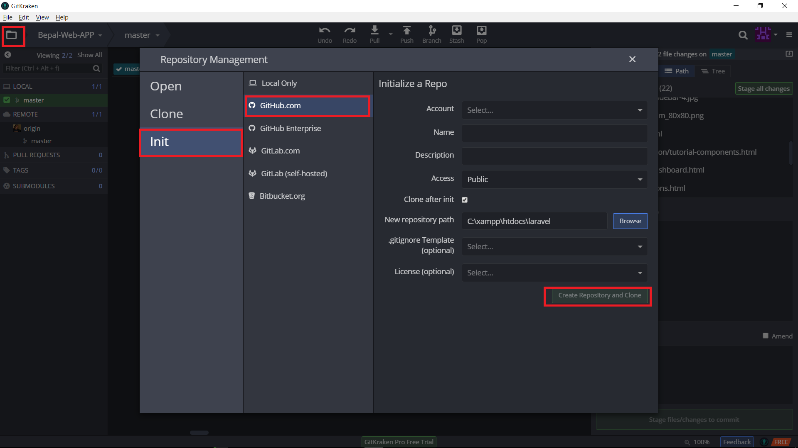
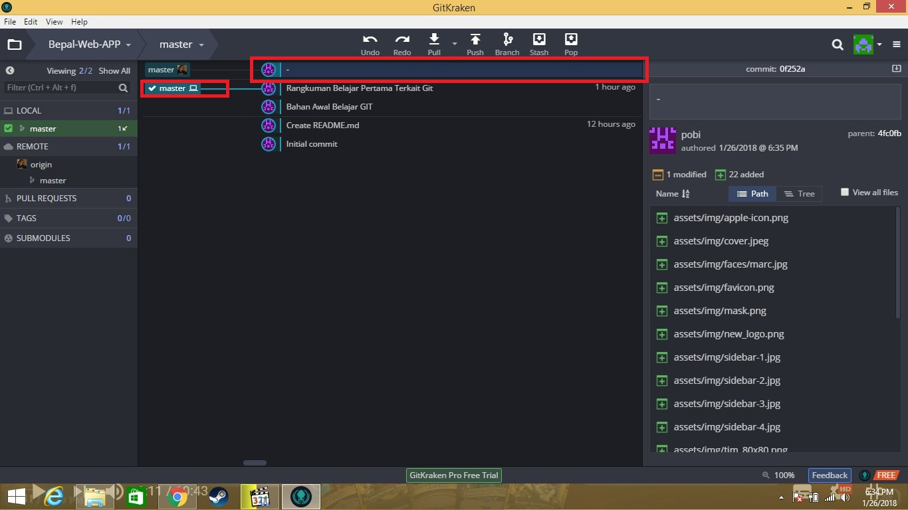
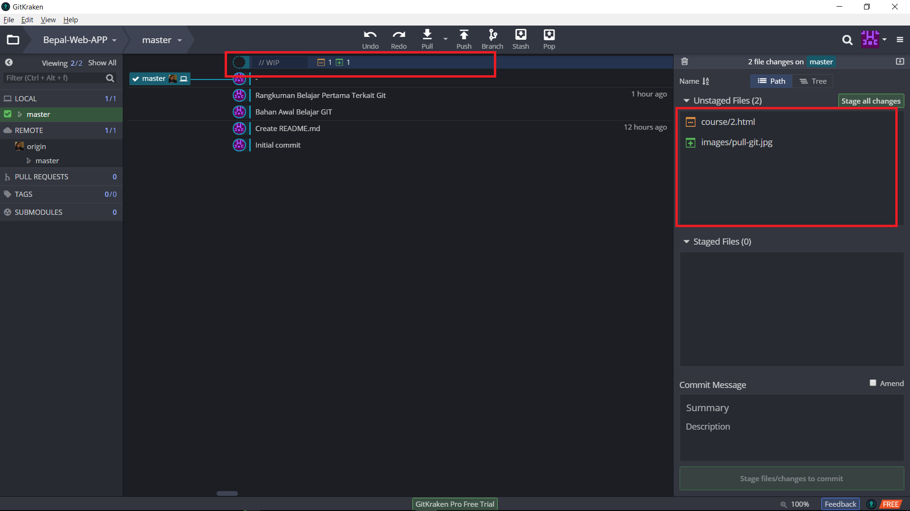
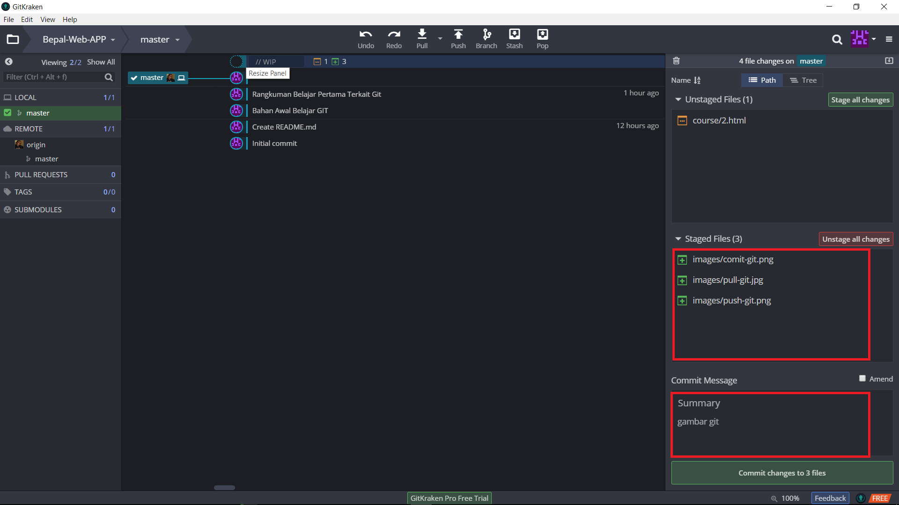

Task 2
Terminologi About GIT
Kata-kata apa yang sering muncul dalam git?
Terminologi
Terminologi (bahasa Latin: terminus) atau peristilahan adalah ilmu tentang istilah dan penggunaannya. Istilah (Arab: اصطلاح, iṣṭilāḥ) adalah kata dan gabungan kata yang digunakan dalam konteks tertentu. Kajian terminologi antara lain mencakup pembentukannya serta kaitan istilah dengan suatu budaya. Ahli dalam terminologi disebut dengan juru istilah "terminologist" dan kadang merupakan bagian dari bidang penerjemahan.
https://id.wikipedia.org/Git Init
Agar projek kita dapat diatur oleh git, maka kita perlu melakukan inisiasi git terlebih dahulu
Git Commit
Anda telah menambahkan file baru, namun anda belum melakukan commit. Oke, kembali ke contoh kasus dalam pembuka artikel ini, commit merupakan istilah untuk menandai terhadap perubahan yang telah anda lakukan, dalam contoh sebelumnya kita menandainya dengan tanggal dan keterangan singkat. Nah untuk menandai setiap perubahan yang telah anda lakukan dan anda ingin agar git mengingatnya Anda harus melakukan commit terlebih dahulu.
Git Push
Sebenarnya git push (sesuai artinya memasukkan) itu adalah memasukkan file-file atau direktori hasil kerjaan kita yang dilakukan setelah melakukan commit ke tempat penyimpanan projeknya (misal dalam kasus ini adalah github).
Git Pull
Perintah git pull ini akan sering kali digunakan apabila kita dalam bekerja membuat suatu aplikasi atau mengembangkan aplikasi secara tim, atau anda mengerjakan aplikasinya dengan dua buat PC/Laptop yang berbeda dan ingin tetap tersinkronisasi secara baik.
Home Work 2
Ready To First Init,Comit,Pull and Push Git
Tutorial Sederahana Berkaitan dengan Git
Init Git
pada tutorial di bawah ini merupakan, tutorial Untuk melakukan Init Git menggunakan Git Kraken
1. Open Git Client
Disini saya menggunakan Git kraken sebagai Git Clientnnya2. Init git
pada jendela sebelah kiri atas aplikasi git kraken, terdapat logo folder, yang akan memunculkan tampilan menu git. bisa di lihat pada gambar di bawah ini pilih menu git, lalu pilih vendor yang anda gunakan. missalnya github. lalu masukan data yang dibutuhkan. ini akan otomatis membuat sebuah repository baru pada vendor yang telah anda pilih sebelumnya dengan nama sesuai yang anda masukan pada form Pull Git
pada tutorial di bawah ini merupakan, tutorial Untuk melakukan Pull Git menggunakan Git Kraken
1. Pull Git dari Server Github
Setelah berhasil melakukan init git, kita bisa melakukan pull(ambil data dari server). ingat ketika kita mulai membangun project secara tim. sebelum melakukan git. anda harus terlebih dahulu melakukan pull. tujuannya adalaha source anda sesuai dengan master, sehingga tidak ada kemungkinan bentrok pada saat anda memulai mengerjakan project anda. adapun indikator terdapat modifikasi antara local komputer anda (master) dan github yaitu dapat di lihat pada gambar di bawah ini. jelas terlihat, posisi master anda terdapat di bawah satu baris dengan tim rekan anda. ini menunjukan bahwasanya versi code anda sudah di lampui dengan teman project anda. sehingga kita dapat melakukan perintah pull. untuk memperbaharui code anda dengan server Push Git
pada tutorial di bawah ini merupakan, tutorial Untuk melakukan Push Git menggunakan Git Kraken
1. Push git ke Server Github
push git merupakan sebuah perintah untuk memasukan code anda ke server (github). seandanya anda berkerja sebagai kelompok. sewaktu waktu ada kemungkinan modular yang ada buat telah selesai. maka code tersebut akan di masukan ke server, supaya progres dari pada project berjalan ataupun bisa di gunakan untuk anggota lain kelompok anda bekerja. indikator adanya source yang bisa di push ke server yaitu dapat di lihat pada gambar di bawah ini. perhatikan ada tulisan "wip" yang artinya "work in progres" ini menunjukan bahwasanya file tersebut sedang anda kerjakan. pada gambar di bawah ini terdapat 4 buah file dengan indikator yang berbeda. cara untuk melkukan push ke server dengan cara mengklik wip. lalu pilih pada menu stage, file apa saja yang ingin anda push lalu tekan menu push, yang harus di perhatikan sebelum ada push yaitu, anda harus terlbih dahulu melakukan pull. sehinnga data di server sudah menjadi paling terbaru saat ini. sebelum melakukan push. ada harus melakukan comiit terlebih dahulu. comit git ada pada penjelasan berikutnya Commit Git
pada tutorial di bawah ini merupakan, tutorial Untuk melakukan Commit Git menggunakan Git Kraken
1. Coomit git Code anda
commit merupakan salah satu bentu penegasan terhadap code yang telah anda perbaharui. missalnya pada contoh di bawah ini. anda ingin melakukan push 3 buah file. yang telah kita pilih. selanjutnya kita akan memberikan sedikit komentar untuk memberitahui bahwasanya apa sebenarnya code yang anda berikan tersebut. tujuannya untuk memberitahukan kepada teman project anda terkait kode anda. baru lihat kita bisa melakukan push Clone Git
pada tutorial di bawah ini merupakan, tutorial Untuk melakukan Clone Git menggunakan Git Kraken